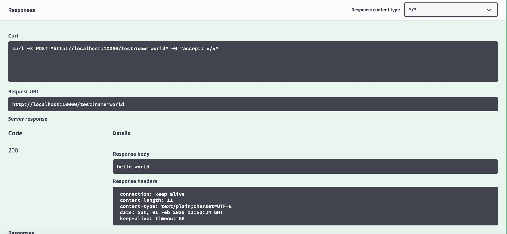
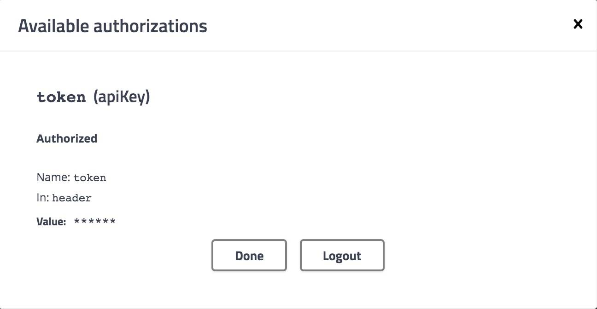

- 00 开篇导读.md.html
- 01 以真实“商场停车”业务切入——需求分析.md.html
- 02 具象业务需求再抽象分解——系统设计.md.html
- 03 第一个 Spring Boot 子服务——会员服务.md.html
- 04 如何维护接口文档供外部调用——在线接口文档管理.md.html
- 05 认识 Spring Cloud 与 Spring Cloud Alibaba 项目.md.html
- 06 服务多不易管理如何破——服务注册与发现.md.html
- 07 如何调用本业务模块外的服务——服务调用.md.html
- 08 服务响应慢或服务不可用怎么办——快速失败与服务降级.md.html
- 09 热更新一样更新服务的参数配置——分布式配置中心.md.html
- 10 如何高效读取计费规则等热数据——分布式缓存.md.html
- 11 多实例下的定时任务如何避免重复执行——分布式定时任务.md.html
- 12 同一套服务如何应对不同终端的需求——服务适配.md.html
- 13 采用消息驱动方式处理扣费通知——集成消息中间件.md.html
- 14 Spring Cloud 与 Dubbo 冲突吗——强强联合.md.html
- 15 破解服务中共性问题的繁琐处理方式——接入 API 网关.md.html
- 16 服务压力大系统响应慢如何破——网关流量控制.md.html
- 17 集成网关后怎么做安全验证——统一鉴权.md.html
- 18 多模块下的接口 API 如何统一管理——聚合 API.md.html
- 19 数据分库后如何确保数据完整性——分布式事务.md.html
- 20 优惠券如何避免超兑——引入分布式锁.md.html
- 21 如何查看各服务的健康状况——系统应用监控.md.html
- 22 如何确定一次完整的请求过程——服务链路跟踪.md.html
- 23 结束语.md.html
- 捐赠
04 如何维护接口文档供外部调用——在线接口文档管理
上个章节初步将一个应用运行起来，由于服务不会单独存在，服务开发团队必然与其他服务团队进行服务调用，暴露出对外接口势在必行。早期做开发的时候，大家习惯于以 word 或 excel 的形式，但弊端显而易见，一旦接口发生变动，文档需要同步更新，遗憾的是很多接口已经更新，但文档都没有跟上，相信你也有过痛苦的经历。本文带领你认识几款接口文档管理工具，并实现本案例实践中用到的在线接口文档管理。
几款 API 工具介绍
我们迫切需要一个接口文档工具，能实时与系统接口保持同步，无须额外付出成本（资金成本、时间成本）最好。这里介绍几个开源的 API 工具，可以选择使用。
RAP2
官方地址：http://rap2.taobao.org/，早期称为 RAP ，阿里妈妈 MUX 团队出品，后面项目停止维护，转移至 RAP2 项目。
来自官网的介绍：RAP2 是时下流行的开发接口管理工具，通常用于前后端分离的开发模式中，共同约定接口，而 RAP2 可以根据约定的接口自动生成 Mock 数据、对后端接口进行校验，拥有较好的文档编写体验，支持复杂的 Mock 逻辑，为开发提供了便利。 RAP2 是参照 RAP1 第一代的基础上，使用 Node + React 重构了所有主要功能。
可以在线使用，也可以本地部署使用，本地部署有详细的步骤介绍，从部署手册来看，产品还是比较重的，环境依赖也比较多。部署后，同样存在要花时间保持与代码同步的问题，针对提供比较稳定接口的项目而言，是个不错的选择。

APIDOC
官方地址：https://apidocjs.com/，通过代码中的相当格式的注释来生成 API 接口文档，依赖 Node.js 环境。使用比较简单，弊端：接口发生变动时，需要花时间来同步文档。针对比较稳定的接口系统而言，可以做个备选。

Spring REST Docs
Spring 全家桶中很多 API 文档，都是基于此组件生成，据官方提供的使用方法需要编写相应的代码片断，还有相应的语法规范，再通过项目构建的方式生成离线文档。操作起来比较繁琐，这里不推荐使用。生成的文档形如下面截图中所示：

Swagger
官网地址：https://swagger.io ， 是一款 RESTFU L 接口的文档在线自动生成+功能测试功能软件，是一个规范和完整的框架，标准的，语言无关，用于生成、描述、调用和可视化 RESTful 风格的 Web 服务。总体目标是使客户端和文件系统作为服务器以同样的速度来更新。文件的方法，参数和模型紧密集成到服务器端的代码，允许 API 来始终保持同步。Swagger 让部署管理和使用功能强大的 API 从未如此简单。
本实战案例中采用 Swagger 来进行的 API 的管理。

Spring Boot 整合 Swagger2
1、引入依赖
加入 Swagger 相关的 jar 依赖，由于各个子模块都有用到，这里将 Swagger 在根 pom.xml 中进行统一的版本管理
<properties>
<swagger.version>2.8.0</swagger.version>
</properties>
<!--swagger2 -->
<dependency>
<groupId>io.springfox</groupId>
<artifactId>springfox-swagger2</artifactId>
<version>${swagger.version}</version>
</dependency>
<dependency>
<groupId>io.springfox</groupId>
<artifactId>springfox-swagger-ui</artifactId>
<version>${swagger.version}</version>
</dependency>
子模块中无须配置 version，直接引入即可，如果需要变更 version，直接在根 pom.xml 中修改，所有依赖子模块的版本也会一同发生变更。
<!--swagger2 -->
<dependency>
<groupId>io.springfox</groupId>
<artifactId>springfox-swagger2</artifactId>
</dependency>
<dependency>
<groupId>io.springfox</groupId>
<artifactId>springfox-swagger-ui</artifactId>
</dependency>
2、Swagger2 配置
建立 config 包，新增 Swagger 配置类。通过 [@EnableSwagger2 ] 注解启用 Swagger2 ，然后配置一个 Docket Bean ，配置映射路径和要扫描的接口的位置，在 apiInfo 中，主要配置一下 Swagger2 文档网站的信息，例如网站的 title ，网站的描述，联系人的信息，使用的协议、接口的版本等等。
@EnableSwagger2
@Configuration
public class Swagger2Config {
@Bean
public Docket createRestApi() {
return new Docket(DocumentationType.SWAGGER_2).apiInfo(apiInfo()).select()
.apis(RequestHandlerSelectors.any()).paths(PathSelectors.any()).build();
}
private ApiInfo apiInfo() {
return new ApiInfoBuilder()
.title("Member 会员模块接口层（基于 SpringBoot2+Swagger2）.")
.contact(new Contact("growithus", "https://backkoms.github.io/", "[email protected]"))
.version("1.0")
.description("").build();
}
}
由于采用的是较高版本，相应的 Controller 类中无须再编写 Swagger 相应的代码注解，代码侵入性进一步降低。旧版本相关的注解，如 @Api、@ApiOperation、@ApiImplicitParams、@ApiImplicitParam、[@ApiModel ] 等，如果是旧版本，必须要在相关代码中增加以上相应的注解，对代码有一定侵入性。
经过以上两个步骤，Swagger2 就算配置成功了，非常简捷。启动项目，输入 http://localhost:10060/swagger-ui.html，能够看到如下 UI，说明已经配置成功了。


3、API 验证测试
编写测试类，启动项目
@RestController
@RequestMapping("test")
public class APITestController {
@PostMapping("/hello")//只支持 POST 请求
//@RequestMapping(name = "hello", method = { RequestMethod.POST })//同样只支持 POST 请求
public String hello(String name) {
return "hello " + name;
}
}
Request 方法有 8 种请求类型：POST \ GET \ OPTIONS \ HEAD \ PUT \ DELETE \ TRACE \ PATCH，为确保不必要的请求造成的潜在威胁，案例建议中直接采用 POST 方式一种，禁用其它请求方式。 @PostMapping(“/hello”) 功能等同于 @RequestMapping(name = “hello”, method = { RequestMethod.POST })
1、直接使用 Shell 脚本进行请求测试：
appledeMacBook-Air:~ apple$ curl -X POST “http://localhost:10060/test?name=world” hello world
可以看到正常输出结果，再测试一下其它请求方式能否正常请求数据：
appledeMacBook-Air:~ apple$ curl -X GET “http://localhost:10060/test?name=world” {“timestamp”:“2020-02-01T12:59:09.508+0000”,“status”:405,“error”:“Method Not Allowed”,“message”:“Request method ‘GET’ not supported”,“path”:“/test”}
响应输出方法不支持，只支持 POST 方式请求。
2、未使用 Swagger 时，可以采用 Postman 测试工具进行接口调试。
3、现在已经集成了 Swagger 功能，打开http://localhost:10060/swagger-ui.html，找到 api-test-controller 下对应的方法，点击” try it out “，输入参数，执行” Execute “功能。查看正常输出结果：


使用 Swagger 即可在直接在线感知接口变更，还能在 UI 上直接进行接口测试，不再依赖第三方组件。
如果参数中存在必输项，又当如何设置呢？此时，必须采用代码注解侵入的方式 [@ApiImplicitParam ]
@ApiImplicitParam(required = true, name = "name", dataType = "String", value = "名字", defaultValue = "world",paramType="query")
/*name：参数名
value：参数的汉字说明、解释
required：参数是否必须传
paramType：参数放在哪个地方
· header --> 请求参数的获取：@RequestHeader
· query --> 请求参数的获取：@RequestParam
· path（用于 restful 接口）--> 请求参数的获取：@PathVariable
· body（不常用）
· form（不常用）
dataType：参数类型，默认 String，其它值 dataType="Integer"
defaultValue：参数的默认值
*/
常用的注解还如下几个，与旧版本的注解略有不同。
@Api //用在类上，说明该类的作用
@ApiOperation //用在方法上，增加方法说明
@ApiImplicitParams //用在方法上，包含一组参数说明
@ApiImplicitParam //用在 ApiImplicitParams 中，给方法入参增加说明
@ApiResponses //用于表示一组响应
@ApiResponse //用在@ApiResponses 中，用来表达一个错误的信息。【code：错误,message：信息,response:抛出异常类】
@ApiModel //用在实体类上，描述一个 model 的信息
@ApiModelProperty //用在实体类的参数上，描述一个参数的信息
加入以上注解后，测试类演变如下：
@RestController
@RequestMapping("test")
@Api("测试类")
public class APITestController {
@ApiOperation("问候")
@PostMapping("/hello")
@ApiImplicitParam(required = true, name = "name", dataType = "String", value = "名字", defaultValue = "world", paramType = "query")
public Hello hello(String name) {
Hello hello = new Hello();
hello.setName(name);
return hello;
}
}
@ApiModel
class Hello {
@ApiModelProperty("姓名")
private String name;
@ApiModelProperty("年龄")
private int age = 10;
public String getName() {
return name;
}
public void setName(String name) {
this.name = name;
}
public int getAge() {
return age;
}
public void setAge(int age) {
this.age = age;
}
}
重新打开http://localhost:10060/swagger-ui.html地址，发现参数已变成必输项，并且有默认值，输出响应值为 Hello 值对象的 JSON 数据格式。
4、生产环境屏蔽
使用 Swagger 大大提高接口的开发测试效率，如果不加以限制，暴露在生产环境中，那就是一个潜在的安全风险，所以在开发、测试环节正常使用，但要在生产环境中屏蔽 Swagger 的功能。上一篇中提及到多环境配置的问题，这里可以利用它来做文章。
实现方式很简单，在 Swagger 配置类增加注解 @Profile({ "dev", "test" }) ，标记只有在 dev 或 test 环境下才能正常使用 swagger 的接口调试功能，在生产环境下这个类是不会加载的，也就达到了生产环境下屏蔽的目标。启动后测试发现，swagger-ui.html 页面已不能正常加载接口进行测试。
@EnableSwagger2
@Configuration
@Profile({ "dev", "test" })
public class Swagger2Config {
}
注意：任何 [@Component] 或 [@Configuration] 注解的类都可以使用 [@Profile] 注解。
5、增加 token 统一参数
不少内部服务是需要用户登陆后才能正常使用的，比如用户签到领取积分，必须登陆后才正常使用，如果在每个接口中增加 token 参数，重复度太高，设计也不够优雅，一般情况下将 token 放到请求头中较为合适， Swagger 页面中如何显性增加输入 token 的位置就变成了我们的目标。
在 Swagger 配置类修改配置，完成后如下：
@EnableSwagger2
@Configuration
@Profile({ "dev", "test" })
public class Swagger2Config {
@Bean
public Docket createRestApi() {
ParameterBuilder parameterBuilder = new ParameterBuilder();
List<Parameter> parameters = new ArrayList<>();
parameterBuilder.modelRef(new ModelRef("String")).name("token").parameterType("header").description("token").defaultValue("").
//考虑到有些请求是不需要 token 的，此处不能置必填
required(false).build();
parameters.add(parameterBuilder.build());
return new Docket(DocumentationType.SWAGGER_2).apiInfo(apiInfo()).select()
.apis(RequestHandlerSelectors.any()).paths(PathSelectors.any()).build().globalOperationParameters(parameters).securitySchemes(getSecuritySchemes());
}
private ApiInfo apiInfo() {
return new ApiInfoBuilder()
.title("Member 会员模块接口层（基于 SpringBoot2+Swagger2）.")
.contact(new Contact("growithus", "https://backkoms.github.io/", "[email protected]"))
.version("1.0")
.description("").build();
}
private List<ApiKey> getSecuritySchemes() {
List<ApiKey> keys = new ArrayList<>();
ApiKey key = new ApiKey("token", "token", "header");
keys.add(key);
return keys;
}
}
启动项目后，打开 swagger-ui.html 页面，会发现多出一个 Authorize 的按钮，打开后输入有效 token 就实现登陆，其它接口直接使用即可，无须多次再输入 token （此时并未实现 token 验证，后续可通过 AOP 编程来验证 token 的有效性）。



到此，Swagger 已经可以正常应用在项目中，后续直接 Copy 本示例的配置即可复用。
留下个思考题
每个子服务模块都会对外暴露接口，如果调用服务很多，将不得不面对接口页面来回切换的繁琐，有没有什么办法简化一下呢？
© 2019 - 2023 Liangliang Lee. Powered by gin and hexo-theme-book.